A grazing board isn't one single thing, it changes shape entirely depending on who's actually eating from it.
A kids' birthday board and a game night board solve completely different problems, even though both start with nothing more than a platter and a knife.
These 18 ideas are organized around that occasion, not around a color scheme or a general aesthetic.
Pick the one that matches the actual event first, then style from there.

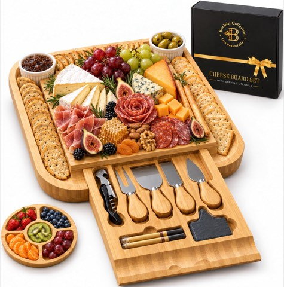
Charcuterie Board Cheese Board Set with Accessories, Bamboo Serving Tray
Shop on AmazonStyling Without the Stress
Starting with a few anchor items, a small bowl, a wedge of cheese, a cluster of grapes, and filling in around them beats trying to plan every placement in advance.
Leaving small gaps isn't a mistake. A little visible board surface actually reads as more intentional than a spread packed wall-to-wall.
A board doesn't need to be perfect to look finished either. A few greens or herbs tucked into the gaps cover most styling sins on their own.
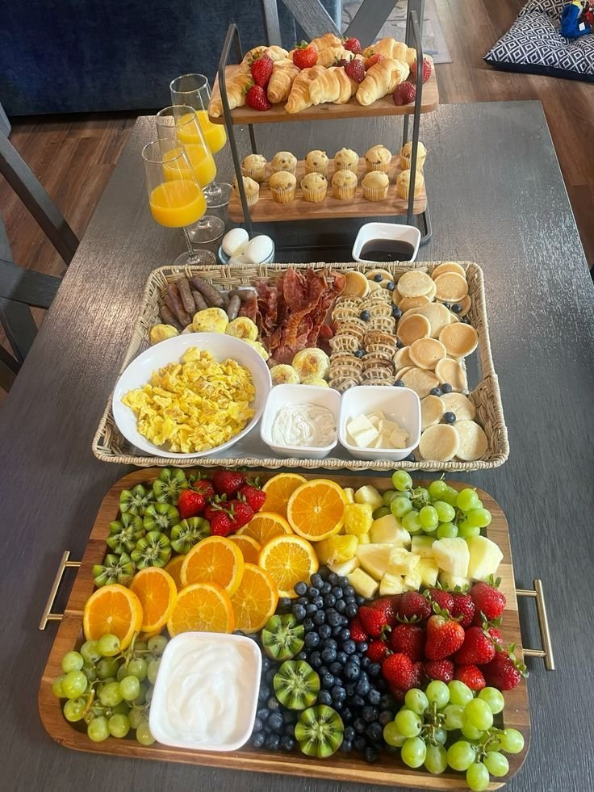
Building a Board That Actually Works
Balance matters more than variety for its own sake, a mix of salty, sweet, creamy, and crunchy keeps a board interesting bite after bite.
Portioning doesn't need to be exact either. A rough guide of two to three ounces of meat and cheese per person covers most gatherings without over-planning.
Starting with the largest items first, then filling gaps with smaller ones, makes the visual layout come together faster than planning it item by item would.
A board that's easy to eat from without a lot of mess tends to actually get finished, not just admired from across the room.
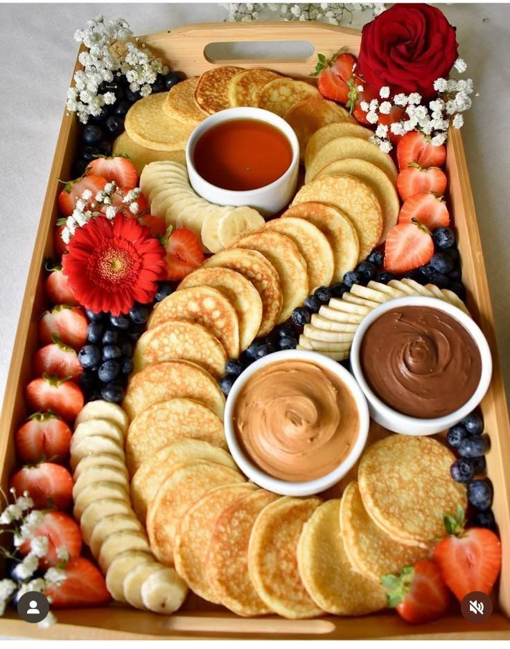
Round Wood Charcuterie Board and Serving Platter, 13 Inch
Shop on AmazonNorpro Stainless Steel Cheese Markers, Set of 6
Shop on Amazon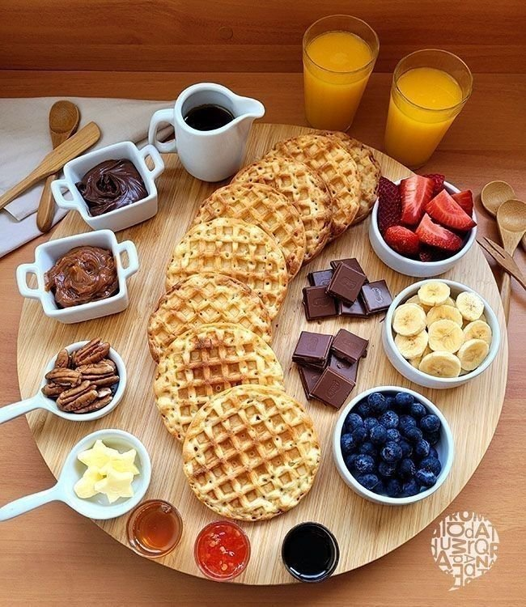
1. The Build-Your-Own Board
Instead of a pre-arranged spread, lay out separate components and let guests build their own small plate.
This solves a real problem at a larger gathering, dietary preferences and portion sizes vary more than any one fixed board can account for.
It also turns the board into an activity, not just food sitting on a table waiting to be eaten.
Worth considering for any event large or mixed enough that one fixed arrangement can't please everyone at once.
2. The Minimalist Board
A handful of carefully chosen items, with real negative space between them, instead of a packed, edge-to-edge spread.
This suits a smaller, more intimate gathering where quality matters more than sheer volume on the table.
Fewer, better ingredients hold up to this kind of sparse arrangement far better than a crowded one would.
A genuinely different visual approach from nearly every other board on this list.
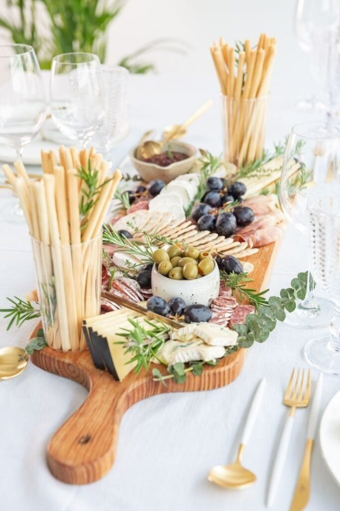
3. The Budget-Friendly Board
A full, generous-looking board doesn't require premium ingredients throughout to actually pull off.
A mix of one or two higher-end items with affordable staples, crackers, seasonal fruit, a basic cheese, still reads as genuinely abundant.
Arrangement does more visual work than cost here, a well-filled board looks generous regardless of the price per item sitting on it.
Worth keeping in rotation for any gathering where the guest list is large and the budget isn't.
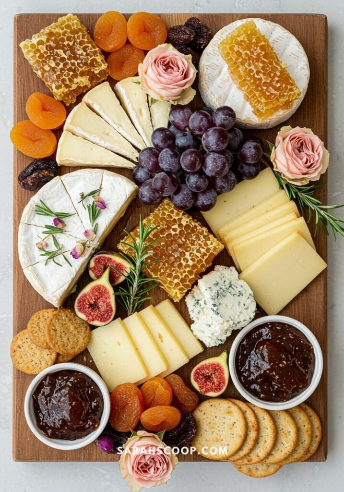
4. The Game Night Board
Easy, one-handed finger foods that don't interfere with holding cards or a controller.
Cubed cheese, pretzels, nuts, and small meat rolls all work fine without needing a plate at all.
This suits a longer gathering where guests graze steadily rather than eating all at once in one sitting.
Durability matters here too, items that hold up sitting out for a few hours work best for this kind of occasion.
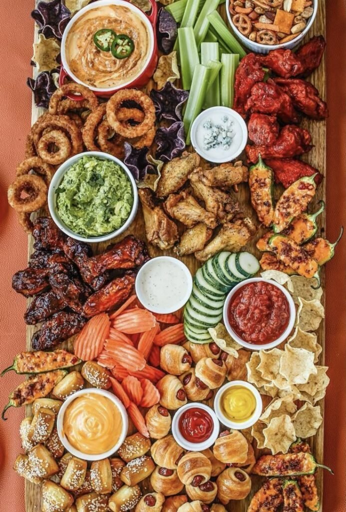
5. The Movie Night Board
Popcorn, candy, chips, and easy-to-eat snacks replace the traditional charcuterie format entirely for this one.
This is built for eating in low light without utensils, which changes what actually belongs on it compared to a standard spread.
A mix of sweet and salty covers most movie-night cravings in a single spread without much extra thought.
A genuinely different occasion-board category from everything else covered here.
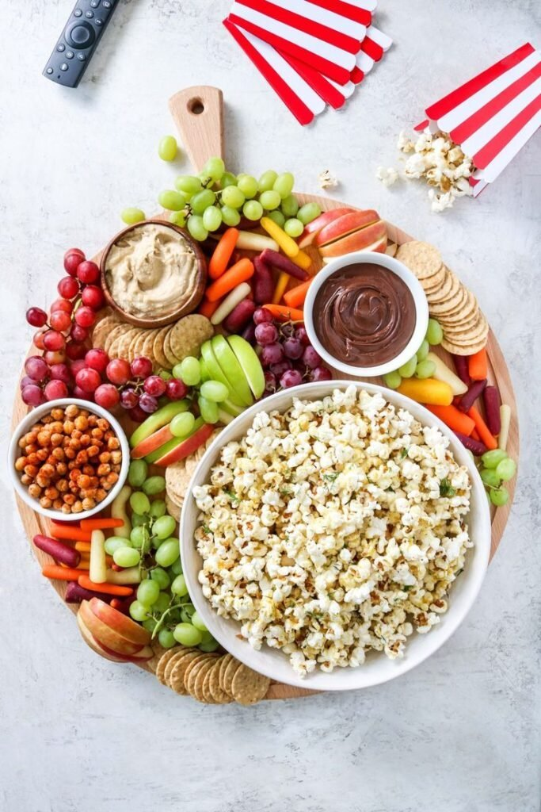
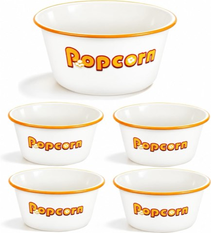
Webake Enamel Popcorn Bowl Set of 5, 4 Quart and 1.2 Quart, Classic Retro
Shop on Amazon6. The Kids' Party Board
Familiar, mild flavors, mild cheese, crackers, fruit, a few mini treats, replace anything too adult-leaning for this crowd.
Cutting items into fun shapes helps, but it isn't strictly necessary if the ingredient choices are already right for picky eaters.
This solves the real problem with a kids' gathering: appealing to picky eaters without needing a completely separate kids' table.
Keeping portions small and bite-sized matters more here than on any adult-focused board.
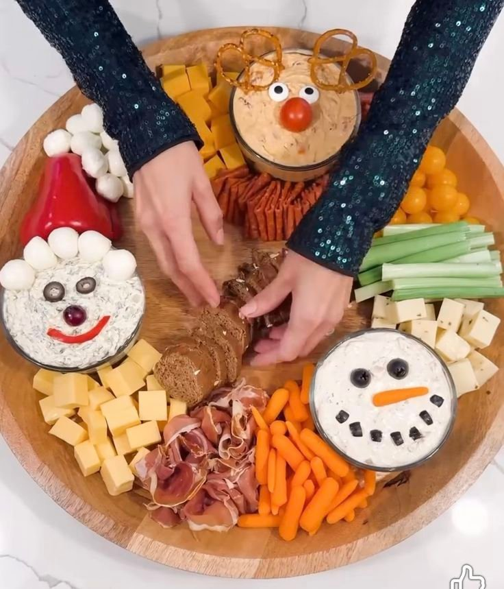
Metal Cookie Cutters Set of 12, Heart, Flower, Round and Star Shapes
Shop on Amazon7. The Holiday Board
Seasonal shapes, festive colors, and holiday-specific garnishes turn a standard board into something genuinely built for the occasion.
This works for any major holiday, not just winter ones, the format adapts to whatever seasonal touches fit the moment.
A themed shape, a wreath, a tree, a heart, built into the arrangement itself adds personality without needing any extra ingredients.
One of the more photogenic boards on this entire list, worth the extra arranging time it takes.
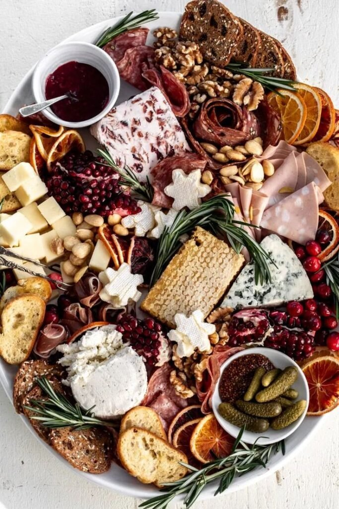
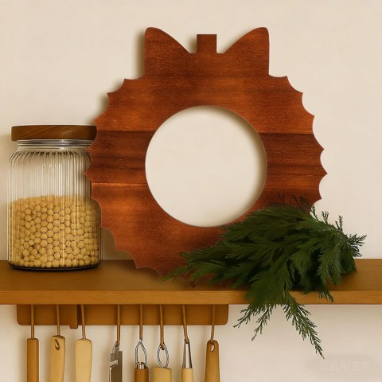
Novabright Christmas Wreath Shaped Wood Cutting Board, Brown Serving Tray
Shop on Amazon8. The Picnic Board
Built for transport first, sturdier items that hold up outside a fridge for a few hours without any issue.
Hard cheeses, cured meats, dried fruit, and crackers all travel far better than soft cheese or anything that needs to stay cold.
A flat, portable surface, a cutting board, a tray with a lid, matters just as much as what actually ends up on it.
Worth planning around the actual outdoor conditions, not just the food choices themselves.
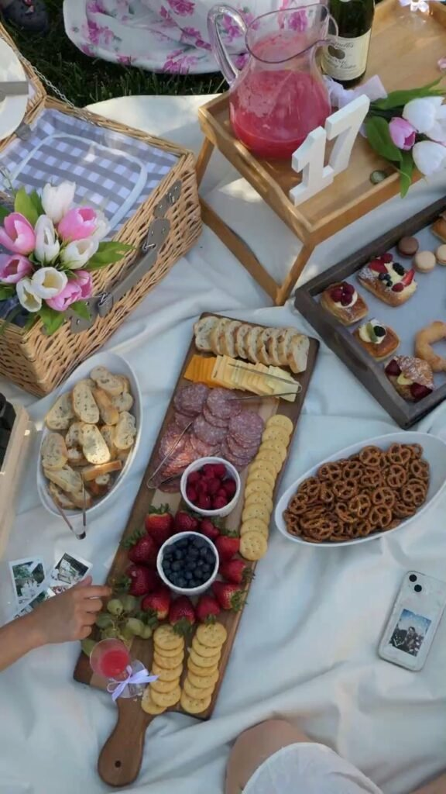
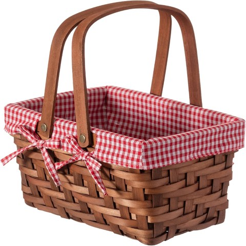
Wickerwise Small Rectangular Woodchip Picnic Basket with Double Folding Handles
Shop on Amazon9. The Mediterranean Board
Hummus, olives, feta, pita, and marinated vegetables build a board around one specific regional flavor profile.
This suits a gathering where guests want something a little lighter and herb-forward than a traditional charcuterie spread.
It also happens to cover vegetarian needs naturally, without feeling like a substitution board tacked onto a meat-heavy menu.
A good option whenever the usual cured-meat format starts feeling a bit overdone.
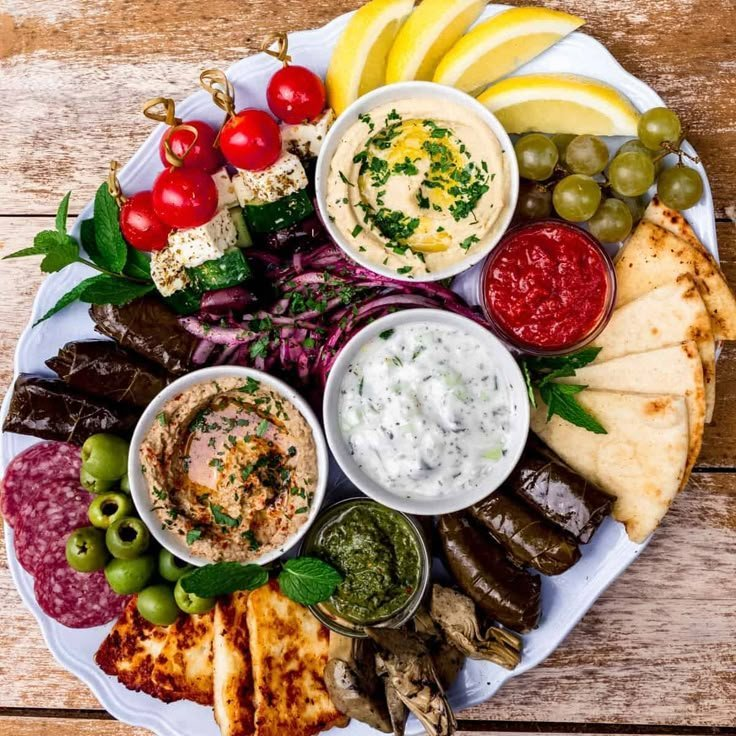
10. The Chocolate Lover's Board
A narrower, more focused version of a dessert board, built entirely around chocolate in its many different forms.
Dark, milk, and white chocolate pieces, chocolate-covered fruit, and a few chocolate-adjacent treats keep the theme genuinely tight.
This suits a smaller, more intimate gathering or a specific celebration built around chocolate as the actual theme.
Simple to execute overall, since the ingredient list stays narrow by design from the start.
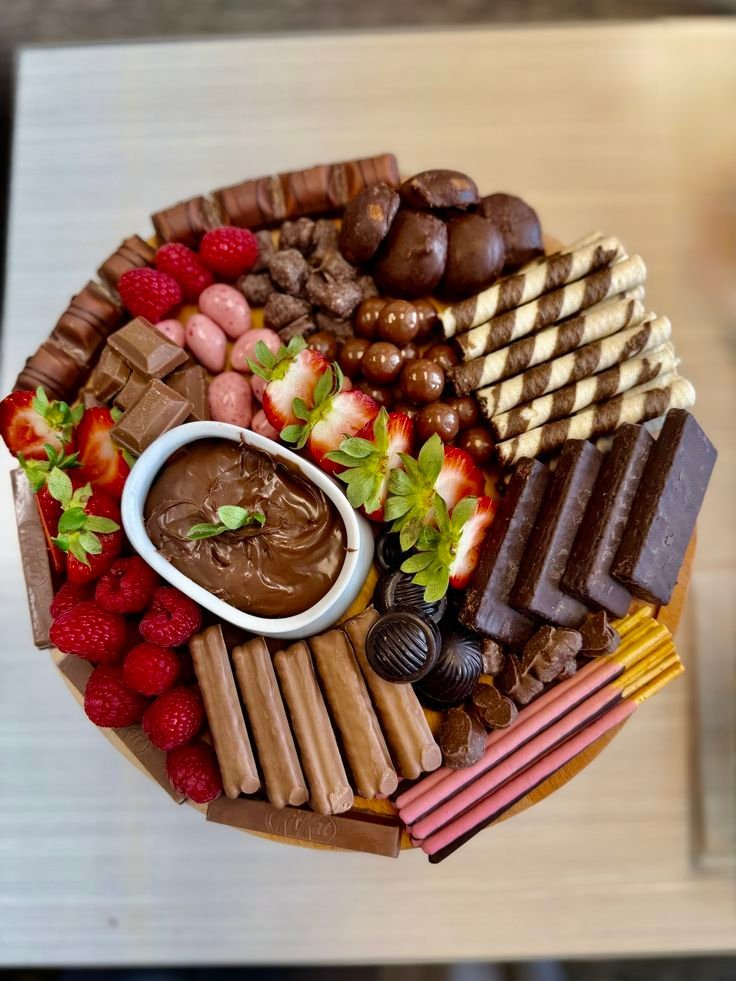
11. The Dessert Board
Chocolate, cookies, fresh berries, and a few small treats replace the savory items entirely for this version.
This works well as a final course after a meal, or as the main event at a more casual gathering.
Varying size and height across the treats keeps it visually interesting the same way a savory board does.
A natural pairing with a breakfast board for anyone planning out a full all-day spread.
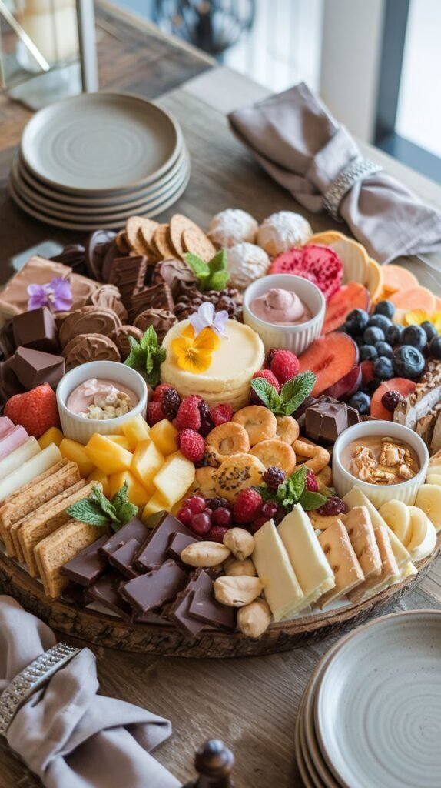
12. The Breakfast Board
Pastries, fresh fruit, yogurt, granola, and a soft cheese or two turn a grazing board into a genuine brunch centerpiece.
This suits a morning gathering where a traditional charcuterie spread simply wouldn't fit the time of day.
Mini muffins or croissants add height and visual interest the same way cured meats do on an evening board.
A genuinely different board category on its own, not just a lighter version of the classic one.
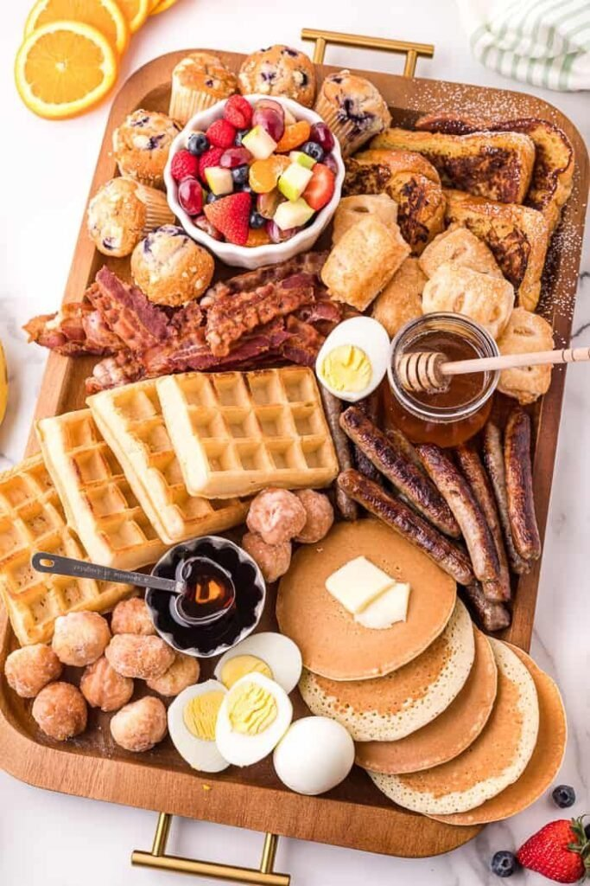
13. The Vegan Board
Plant-based cheeses, hummus, olives, nuts, and fresh produce build a board that's fully dairy- and meat-free from top to bottom.
This requires a bit more planning than a standard board, since substitutions need checking for taste and texture, not just the label on the package.
A good vegan board doesn't read as any kind of compromise, the variety carries it just as well as a traditional one would.
Worth having a version of this one ready whenever a guest list includes dietary restrictions.
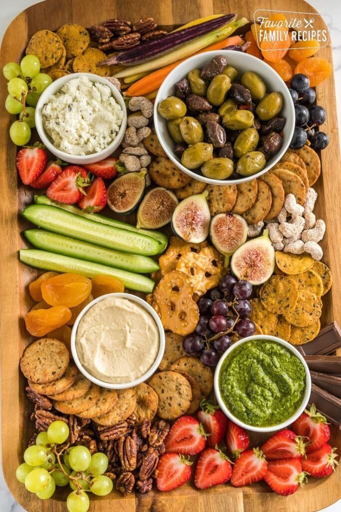
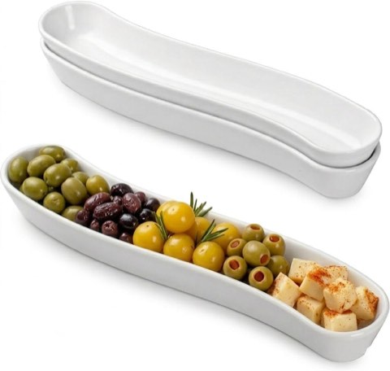
Dizada Ceramic Olive Trays, 12 Inch, 3 Pack, for Appetizers and Crackers
Shop on Amazon14. The Vegetarian Board
Cheese, nuts, fruit, roasted vegetables, and good bread replace the meat entirely without losing any of the board's visual richness.
This covers a dietary need directly, rather than treating it as an afterthought tucked into a corner of a meat-forward board.
Marinated or roasted vegetables add the savory depth that meat usually provides on a more traditional spread.
Worth building as its own dedicated board rather than a smaller side option tacked onto something else.
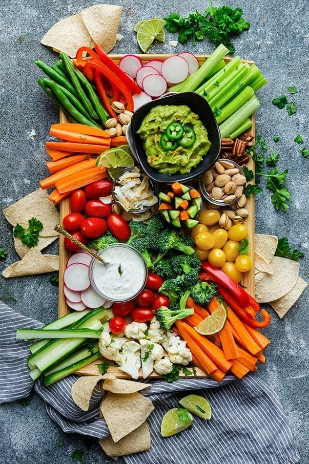
15. The Fruit and Cheese Board
A lighter option built around fresh and dried fruit paired with a few complementary cheeses, nothing heavier than that.
This suits a daytime event or a gathering where a heavier, meat-forward board simply wouldn't fit the mood.
Seasonal fruit keeps this one changing naturally throughout the year without much extra planning required.
A good option for anyone wanting a board that still looks indulgent without actually being heavy.
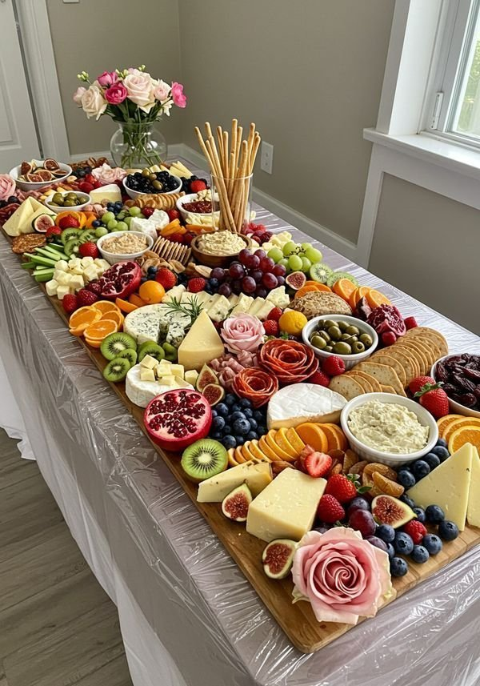
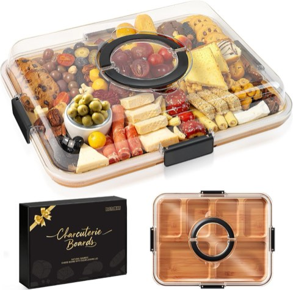
Renmxj Portable Charcuterie Board with Lid, Cheese, Veggie and Snack Tray
Shop on Amazon16. The Meat Lover's Board
Salami, prosciutto, soppressata, and other cured meats take center stage here, with cheese and crackers filling in around the edges.
This suits a gathering where heartier, protein-forward food is simply the expectation going in.
Folding or rolling the meats adds visual height and makes the board noticeably easier to pick from.
A good fit for a more casual, high-energy event like a game watch or similar get-together.
Kikcoin Extra Large Bamboo Cutting Boards, Kitchen Set
Shop on AmazonAcacia Wood Large Charcuterie Board, 36 x 12 Inch, with Cheese Knife Set
Shop on Amazon17. The Cheese Lover's Board
Built around cheese variety first, soft, hard, aged, fresh, with everything else on the board playing a supporting role.
This suits a smaller, more focused gathering where the cheese itself becomes the actual conversation piece.
A few contrasting textures and ages keep the board from feeling one-note despite the narrow focus throughout.
Crackers and a bit of honey round it out nicely without ever competing for attention.
Natural Slate Cheese Board, Individual Charcuterie Board for Appetizers and Desserts
Shop on AmazonLoscarol Honey Pot with Dipper and Lid, 18 Oz Glass Honey Jar
Shop on Amazon18. The Classic Charcuterie Board
Cured meats, a few cheeses, crackers, and a jam, all built around the traditional format that started this whole trend.
This is the safest choice for a mixed crowd with no specific dietary needs to plan around in advance.
It also scales easily, small for a casual get-together, large for an open house with a bigger guest list.
The reliable default whenever nothing else on this list quite fits the occasion better.
SMIRLY Charcuterie Boards Set, Large Bamboo Cheese Board with Accessories
Shop on AmazonCharcuterie Boards Set, Bamboo Cheese Tray with Serving Accessories
Shop on AmazonMistakes Worth Avoiding
Ignoring dietary needs entirely, rather than building one board that actually accounts for them, is the easiest way to leave guests out of the spread.
Prepping everything at the last minute adds unnecessary stress, most components can be arranged well ahead of time instead.
Skipping labels on anything unusual leads to guests quietly avoiding items they'd otherwise have been happy to try.
Overcrowding the board kills the visual appeal just as fast as leaving it too sparse, balance matters more than maximizing quantity.
Final Thoughts
The right grazing board starts with the occasion, not the aesthetic.
A kids' party and a game night call for completely different ingredients, even if the format looks similar on the surface at a glance.
Pick the board that matches what's actually happening, then style it from there.
That order makes the whole process faster, and the result far more useful to the people actually eating from it.